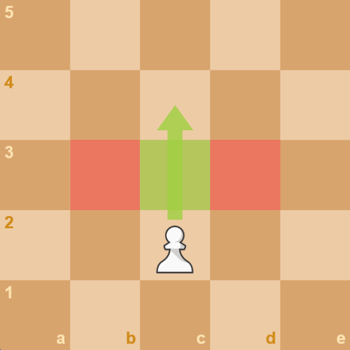
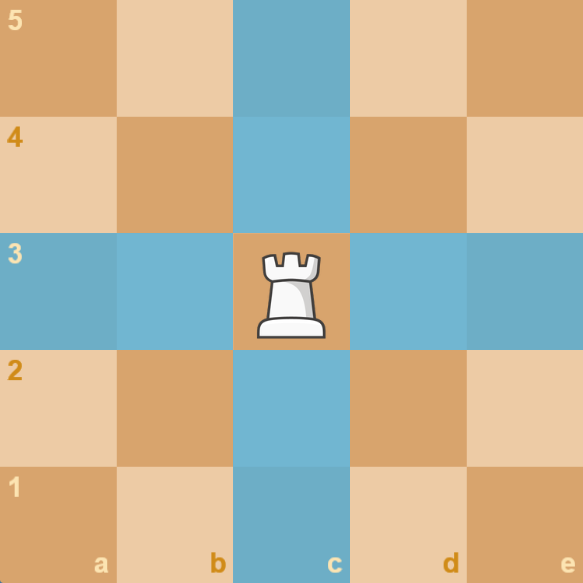
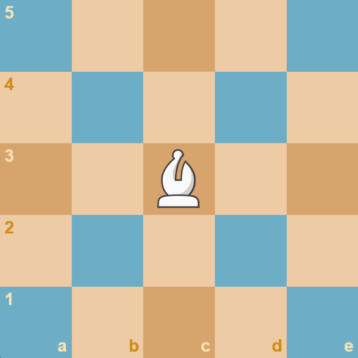
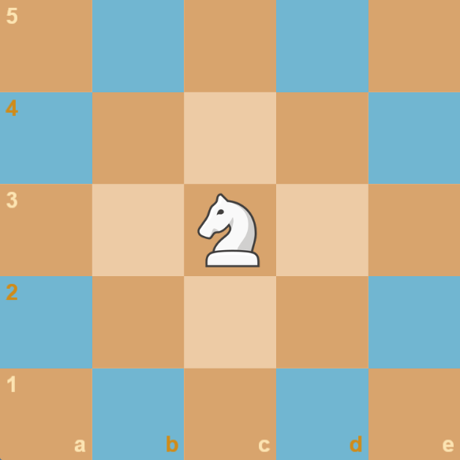
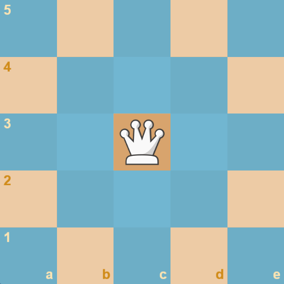
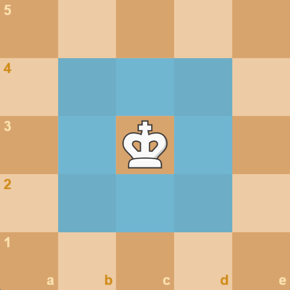

PawnThe pawn may move 1 square forward toward the enemy without capturing, or move either diagonal direction toward the enemy if capturing. If it hasn't moved yet, it may move 2 squares forward without capturing. |
RookThe rook moves any number of squares vertically or horizontally, capturing the first piece it moves into. |
|
 Special: The pawn promotes to any other piece (excluding a king) when it reaches the end of the board. Also En Passant |
 Special: The rook may castle with the king. |
BishopThe bishop may move any number of squares in any diagonal direction, capturing the first piece it moves into. |
KnightThe knight moves 2 squares vertically or horizontally, and then 1 additional square at a right angle - which movement resembles an "L" shape - capturing any piece at it's destination. |
|
 Special: While it can't pass through pieces, it can squeeze between them to reach it's desired destination. |
 Special: The knight jumps over any enemy or friendly piece in the way to it's desination. |
QueenThe queen may move any number of squares vertically, horizontally, or diagonally, capturing the first piece it moves into. |
KingThe king moves only 1 square vertically, horizontally, or diagonally, capturing any piece at it's destination. The king may not move to a square that is under attack by an enemy piece. |
|
 Special: The queen has the combined movement of a rook and bishop, making it the most powerful piece on the board. |
 Special: The king may castle with either rook. |